◆宣傳活動舉辦期間◆
2018年7月28日(六) AM8:00～8月12日(日) 11:59
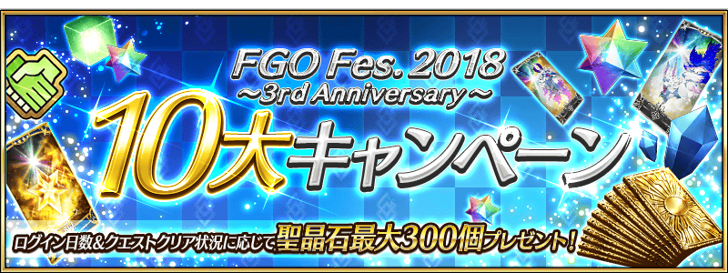
為了記念「Fate/Grand Order Fes. 2018 ～3rd Anniversary～」的舉辦，收集從第一特異點到第七特異點、從亞種特異點Ⅰ到亞種特異點Ⅳ中殘有印象的戰鬥，舉辦「3周年記念回憶關卡」！
通過在迦勒底之門內出現的「回憶關卡」，入手期間限定概念禮裝「英靈旅裝」吧！
所有期間限定概念禮裝「英靈旅裝」的插圖都是特別繪製！
使用通過「回憶關卡」後入手的「FGO Fes. 2018 英靈旅裝券，可從全39張之中選擇喜愛的禮裝2張入手。
「回憶關卡」就算通過後也不會消失，能無數次挑戰，可變更Servant和概念禮裝的組合後再次挑戰。
另外，也會有只限通過所有回憶關卡的Master才能參加的高難易度回憶關卡。
◆回憶關卡舉辦期間◆
2018年7月28日(六) AM8:00～8月8日(三) 11:59
◆期間限定概念禮裝「英靈旅装」交換期間◆
2018年7月28日(六) AM8:00～8月15日(三) 11:59
※關卡通過報酬、戰利品、Master經驗值、魔術禮裝經驗值、絆點數只可在初次通過時獲得。
※「FGO Fes. 2018 英靈旅裝券」在各區域地圖點擊「活動報酬」或在達文西工房內的「活動道具交換」點擊活動橫幅，可交換活動道具。
※藉由通過「回憶關卡」入手的「FGO Fes. 2018 英靈旅裝券」最多2張。
※請注意做為交換對象的期間限定概念禮裝「英靈旅裝」的種類會根據主線關卡的通過狀況有所變化。
◆「FGO Fes. 2018 英靈旅裝券」交換對象◆
做為交換對象「英靈旅裝」全39張的開放條件詳情請在此處的公告確認。
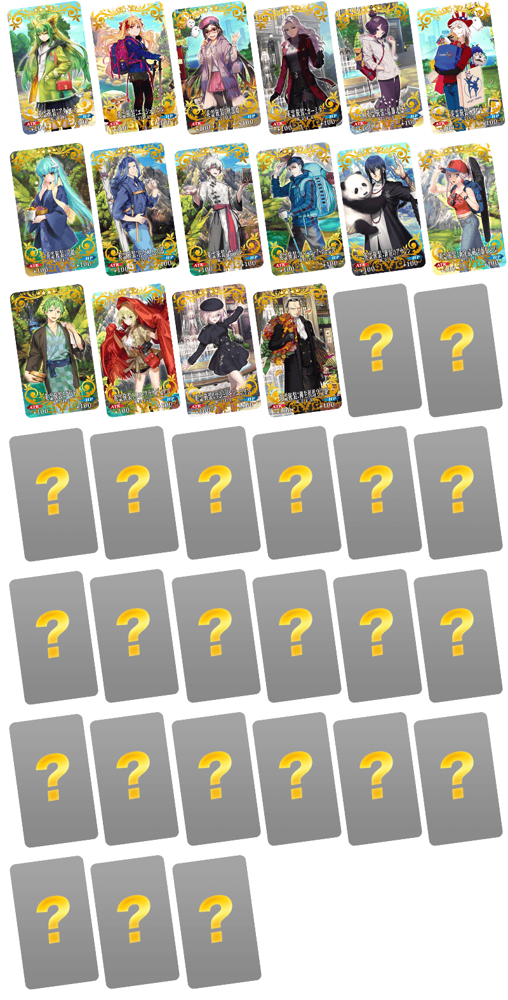
為了記念「Fate/Grand Order Fes. 2018 ～3rd Anniversary～」舉辦實施特別登入獎勵。 |
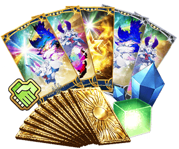 |
◆舉辦期間◆
2018年7月30日(一) AM3:00～8月8日(三) AM2:59
◆贈送對象◆
所有的Master對象
※新玩家必須推進通過至「特異點F 炎上汙染都市 冬木 第3節」。
| 連續登入天數 | 贈送內容 | |
|---|---|---|
| 1日目 | 1,000萬QP | |
| 2日目 | 友情點數 10萬pt | |
| 3日目 | 叡智的猛火ALL★4(SR) 10枚 | |
| 4日目 | 英靈結晶・太陽之芙芙ALL★3(ATK) 10枚 | |
| 5日目 | 英靈結晶・星之芙芙ALL★3(HP) 10枚 | |
| 6日目 | 魔力稜鏡 100個 | |
| 7日目 | 英靈結晶・日輪之芙芙ALL★4(ATK) 1枚 | |
| 8日目 | 英靈結晶・流星之芙芙ALL★4(HP) 1枚 | |
| 9日目 | 呼符 10張(聖晶石召喚10次份) | |
※第1天的登入獎勵會從7月30日(一) AM3:00配發。
※之後的登入獎勵會在每天AM3:00配發。
※連續登入天數中斷的話，無法領取之後的禮物。
※最多能領取9次，但根據成為贈送對象的時間點，可能無法到此上限。
在迦勒底之門內以每日出現的所有的曜日關卡的AP消耗量以期間限定變成1/2！
◆舉辦期間◆
2018年7月29日(日) 15:30～8月8日(三) 11:59
◆對象關卡◆
種火集め<槍･殺編>初級、中級、上級、超級
種火集め<剣･騎編>初級、中級、上級、超級
種火集め<弓･術編>初級、中級、上級、超級
種火集め<ランダム編>初級、中級、上級、超級
弓の修練場 初級、中級、上級、超級
槍の修練場 初級、中級、上級、超級
狂の修練場 初級、中級、上級、超級
騎の修練場 初級、中級、上級、超級
術の修練場 初級、中級、上級、超級
殺の修練場 初級、中級、上級、超級
剣の修練場 初級、中級、上級、超級
宝物庫の扉を開け 初級、中級、上級、超級
※曜日關卡的詳細如下。
【寶物庫の扉開け、種火集め 關卡的難易度等】
| 難易度 | 推薦Lv | 消耗AP | 初次通過報酬 |
|---|---|---|---|
| 初級 | 5 | 10→5 | 魔力稜鏡 1個 |
| 中級 | 10 | 20→10 | 魔力稜鏡 2個 |
| 上級 | 25 | 30→15 | 魔力稜鏡 3個 |
| 超級 | 40 | 40→20 | 魔力稜鏡 4個 |
【修練場 關卡的難易度等】
| 難易度 | 推薦Lv | 消耗AP | 初次通過報酬 |
|---|---|---|---|
| 初級 | 10 | 10→5 | 魔力稜鏡 1個 |
| 中級 | 25 | 20→10 | 魔力稜鏡 2個 |
| 上級 | 40 | 30→15 | 魔力稜鏡 3個 |
| 超級 | 60 | 40→20 | 魔力稜鏡 4個 |
※關卡通過報酬的魔力稜鏡是只有初次通過時才可獲得。
※關卡通過報酬的魔力稜鏡為每日重置。
◆曜日關卡的重點◆
参考攻略推薦職階組成隊伍，挑戰曜日關卡！
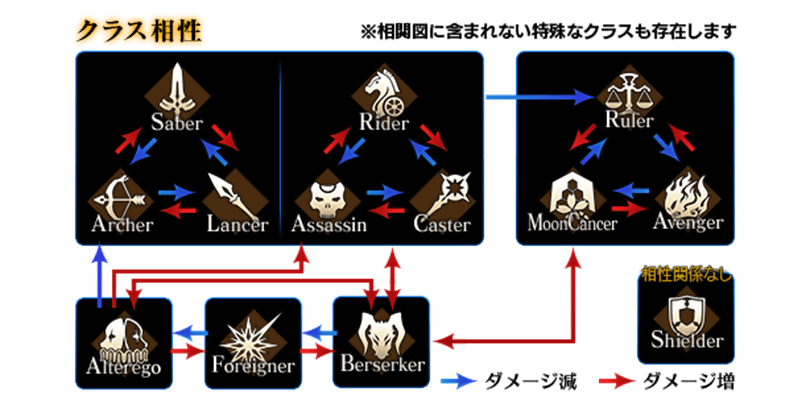
【曜日別關卡一覧】
| 曜日 | 關卡名 | 做為戰利品可獲得的主要道具 | 攻略推薦職階 |
|---|---|---|---|
| 月 |
寶物庫の扉開け AP1/2 |
QP | |
|
弓の修練場 AP1/2 |
Archer的靈基再臨用道具、Archer的技能強化素材道具 | ||
|
種火集め <槍・殺編> AP1/2 |
Lancer、Assassin、Berserker的經驗值卡 | ||
| 火 | 寶物庫の扉開け AP1/2 |
QP | |
| 槍の修練場
AP1/2 |
Lancer的靈基再臨用道具、Lancer的技能強化素材道具 | ||
| 種火集め <剣・騎編> AP1/2 |
Saber、Rider、Berserker的經驗值卡 | ||
| 水 | 寶物庫の扉開け AP1/2 |
QP | |
| 狂の修練場
AP1/2 |
Berserker的靈基再臨用道具、Berserker的技能強化素材道具 | ALL | |
| 種火集め <弓・術編> AP1/2 |
Archer、Caster、Berserker的經驗值卡 | ||
| 木 | 寶物庫の扉開け AP1/2 |
QP | |
| 騎の修練場 AP1/2 |
Rider的靈基再臨用道具、Rider的技能強化素材道具 | ||
| 種火集め <槍・殺編> AP1/2 |
Lancer、Assassin、Berserker的經驗值卡 | ||
| 金 |
寶物庫の扉開け AP1/2 |
QP | |
| 術の修練場
AP1/2 |
Caster的靈基再臨用道具、Caster的技能強化素材道具 | ||
| 種火集め <剣・騎編> AP1/2 |
Saber、Rider、Berserker的經驗值卡 | ||
| 土 | 寶物庫の扉開け AP1/2 |
QP | |
| 殺の修練場 AP1/2 |
Assassin的靈基再臨用道具、Assassin的技能強化素材道具 | ||
| 種火集め <弓・術編> AP1/2 |
Archer、Caster、Berserker的經驗值卡 | ||
| 日 | 寶物庫の扉開け
AP1/2 |
QP | |
| 剣の修練場
AP1/2 |
Saber的靈基再臨用道具、Saber的技能強化素材道具 | ||
| 種火集め <ランダム編> AP1/2 |
Saber、Archer、Lancer、Rider、Caster、Assassin、Berserker的經驗值卡（隨機） | - |
※Berserker在所有的曜日關卡皆為為有效職階。
在進行Servant及概念禮裝的強化時，大成功(經驗值2倍加成) ・極大成功(經驗值3倍加成)的發生機率以期間限定變成3倍！
無論如何藉此機會強化中意的Servant和概念禮裝吧！
◆舉辦期間◆
2018年7月29日(日) 15:30～8月8日(三) 11:59
※請注意Servant技能強化、靈基再臨(Servant進化)、Servant寶具強化、聖杯轉臨、靈衣開放為對象外。
向所有的Master對象，擴張「Servant的持有欄位」與「概念禮裝的持有欄位」追加100欄位。
目前為止的350欄位擴張至持有欄位450欄位。
另外，在達文西工房內的「Servant保管欄位增加」「概念禮裝保管欄位增加」，消耗魔力稜鏡可追加的保管欄位上限數再追加20次份(合計100欄位)。
◆翻新實施時間◆
2018年7月29日(日) 15:30～
【持有欄位的擴張數】
| 對象持有欄位 | 擴張數 |
|---|---|
| Servant持有欄位 | 350→450(100欄位追加) |
| 概念禮裝持有欄位 | 350→450(100欄位追加) |
【保管欄位的擴張數】
| 對象保管欄位 | 剩餘次數 | 最大擴張時 |
|---|---|---|
| Servant保管欄位增加 | 40次→60次(20次份追加) | 300→400(100欄位追加) |
| 概念禮裝保管欄位增加 | 40次→60次(20次份追加) | 300→400(100欄位追加) |
※※請注意在Servant保管欄位的擴張及概念禮裝保管欄位的擴張，1次的擴張需要魔力稜鏡50個。

以期間限定舉辦的亞種特異點主線關卡AP消耗1/2宣傳活動，對所有的亞種特異點對象變成永續舉辦。 |
 |
◆翻新實施時間◆
2018年7月29日(日) 15:30～
◆通過報酬的領取方◆
在Master任務畫面顯示的「Extra(エクストラ)」的項目內，會顯示與通過主線關卡關聯的任務，請點擊已通過的任務領取達成報酬。
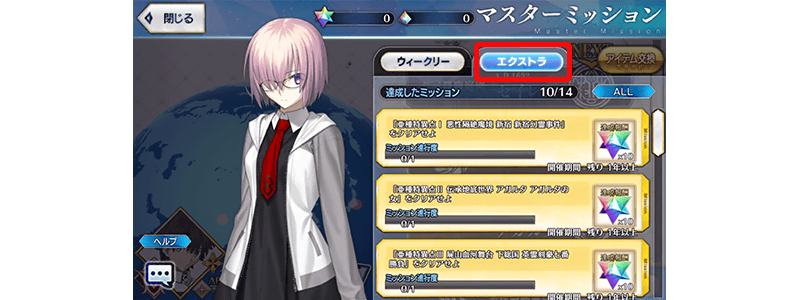
◆追加Extra任務◆
| 達成條件 | 報酬 | |
|---|---|---|
| 通過亞種特異點Ⅰ | 聖晶石 10個 | |
| 通過亞種特異點Ⅱ | 聖晶石 10個 | |
| 通過亞種特異點Ⅲ | 聖晶石 10個 | |
| 通過亞種特異點Ⅳ | 聖晶石 10個 | |
靠總登入獎勵得到的聖晶石數量翻新！
經過總登入100天以後，每50天可獲得的總登入獎勵的聖晶石數量各增量10個。
據此變更，各獲得20個的聖晶石數量變成可獲得30個。
※還有，已經過總登入100天，領取以往份的總登入獎勵，藉由本次變更所追加份(每隔50天10個)的聖晶石，可對應總登入天數一起獲得。
◆翻新實施時間◆
2018年7月29日(日) 15:30～
◆總登入獎勵◆
| 總登入天數 | 入手登入獎勵 | |
|---|---|---|
| 第20天 | 聖晶石 4個 | |
| 第30天 | 聖晶石 4個 | |
| 第40天 | 聖晶石 4個 | |
| 第50天 | 聖晶石 4個 | |
| 第75天 | 聖晶石 10個 | |
| 第100天 | 聖晶石 20個→30個(追加10個) | |
| 之後每50天 | 聖晶石 20個→30個(追加10個) | |
※在總登入天數第10天，2018年7月30日(一) AM2:59前在第10天可獲得聖晶石 4個做為總登入獎勵，2018年7月30日(一) AM3:00以後為起跑衝刺登入獎勵(第10天)可獲得。
◆以往份的總登入獎勵獲得例◆
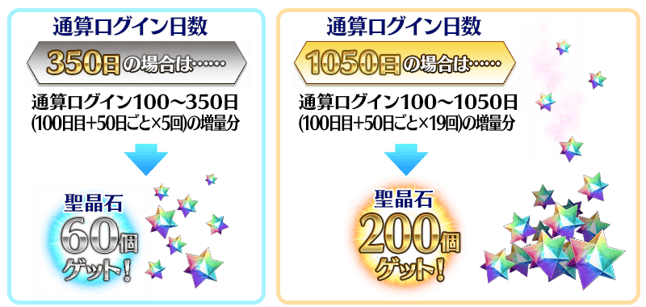
舉辦強化Servant能力的特別關卡「Servant強化關卡」！
本次為了記念3周年，共14位的Servant成為對象！
詳情請在此處的公告確認。
◆追加時間◆
2018年7月29日(日) 15:30～
對Servant攻擊賦予特殊效果的新系統「指令紋章(コマンドコード)」登場！
本新系統，在各Servant的指令卡刻印「指令紋章」的話，該指令卡攻擊時會賦予特攻和回復等各式各樣效果。
「指令紋章」除了友情點數召喚外，也能在2018年7月31日(二) 17:00～8月7日(二) 11:59舉辦的「指令紋章(指令コード)」發行記念關卡入手。
無論如何請藉此機會入手，享受新感覺的戰鬥！
◆追加時間◆
2018年7月31日(二) 17:00～
【7月31日(二) 17:00追記】
有關「指令紋章(コマンドコード)」的操作是在主選單(メインメニュー)的「強化」＞「コマンドコード刻印」進行。
在此畫面進行的操作為以下3種。
1.消耗道具與QP來開放各指令卡的「指令紋章格(コマンドコードスロット)」
2.在開放「指令紋章格」的指令卡刻印「指令紋章(コマンドコード)」
3.消耗道具將刻印的「指令紋章(コマンドコード)」分離
※開放「指令紋章格」的道具，有對應Quick卡「Quick·Code·Opener」、對應Arts卡「Arts·Code·Opener」、對應Buster卡「Buster·Code·Opener」3種，各自皆能在達文西工房的「魔力稜鏡交換」入手。
※賦予「指令紋章(コマンドコード)」效果只限透過刻印過指令卡的攻擊。就算是同個Servant，透過未刻印過指令卡的攻擊仍無法賦予效果。
※消耗「Code·Remover」將「指令紋章」從指令卡分離的話，可以將其再度刻印到指令卡。
※「Code·Remover」能在達文西工房的「魔力稜鏡交換(2018年8月14日(二) 11:59前的期間限定)」「稀有稜鏡交換」入手。
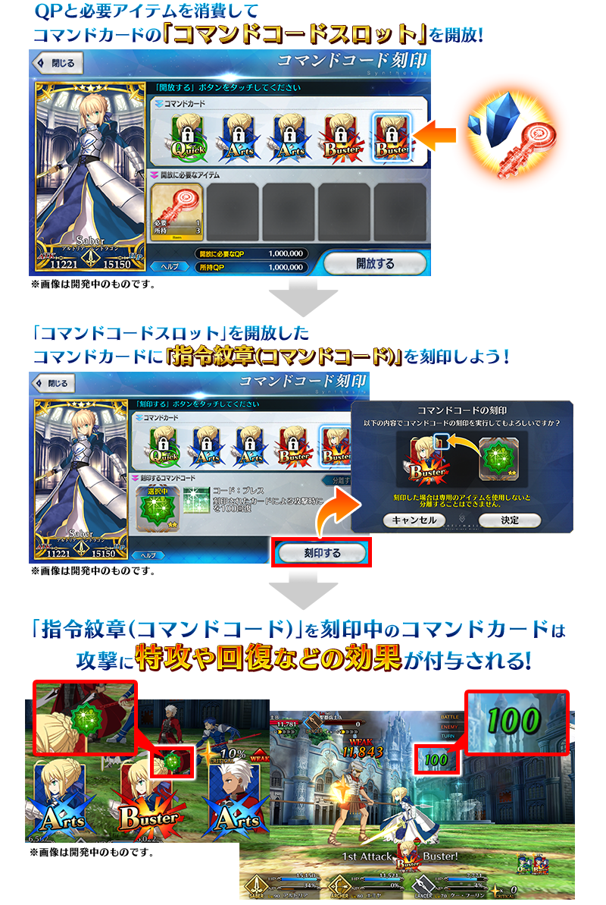
◆指令紋章一覧◆
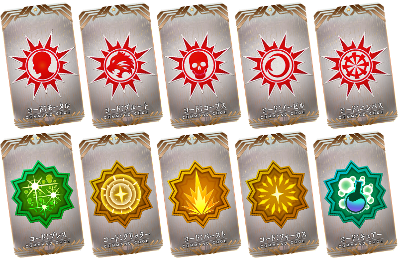
【7月31日(二) 17:00追記】
| 指令紋章名 | 稀有度 | 效果 |
|---|---|---|
| コード:モータル | ★ | 在刻印卡賦予〔人類〕特攻5%效果 |
| コード:ブルート | ★ | 在刻印卡賦予〔猛獣〕特攻5%效果 |
| コード:コープス | ★ | 在刻印卡賦予〔死靈〕特攻5%效果 |
| コード:イービル | ★ | 在刻印卡賦予〔魔性〕特攻5%效果 |
| コード:ニンバス | ★ | 在刻印卡賦予〔神性〕特攻5%效果 |
| コード:ブレス | ★★ | 透過賦予的刻印卡攻擊時，自身的HP回復100 |
| コード:グリッター | ★★ | 刻印卡的星星發生率提升20% |
| コード:バースト | ★★ | 刻印卡的Critical威力提升3% |
| コード:フォーカス | ★★ | 刻印卡的星星集中度提升25% |
| コード:キュアー | ★★ | 在透過賦予的刻印卡攻擊時，自身的毒・詛咒・燒傷狀態解除1個 |
通過下述的期間中在迦勒底之門出現的「指令紋章(コマンドコード)」發行記念關卡，得到關卡限定的指令紋章吧！
◆舉辦期間◆
2018年7月31日(二) 17:00～8月7日(二) 11:59
◆關卡開放條件◆
通過「特異點F 炎上汙染都市 冬木」的Master對象
【7月31日(二) 17:00追記】
◆通過報酬◆
★3(R)ラッキービースト 1張
Quick・Code・Opener 1個
Arts・Code・Opener 1個
Buster・Code・Opener 1個
◆發行記念關卡限定指令紋章◆
| 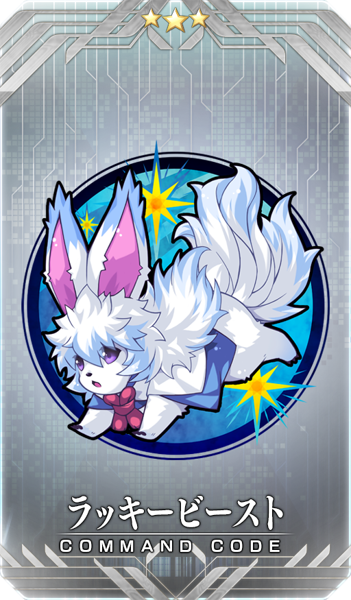 |
【7月31日(二) 17:00追記】 |
※請注意「指令紋章(コマンドコード)」發行記念關卡沒有冒險部份。

|
舉辦包含期間限定確定1位★5(SSR)Servant的10次召喚「Fate/Grand Order Fes. 2018 ～3rd Anniversary～福袋召喚(職階別)」！ |
※可自Saber、Archer、Lancer、Rider、Caster、Assassin、Berserker、EXTRA的全8職階選任一職階召喚。
◆舉辦期間◆
2018年7月29日(日) 15:30～8月12日(日) 11:59
舉辦期間限定活動「復刻:All the Statesman! ～靠漫畫了解合衆國開拓史～」！
通過活動關卡，得到期間限定Servant「靠漫畫了解Berserker」與限定概念禮裝「マンガで分かる！FGO」吧！
詳情請在此處的公告確認。
◆舉辦期間◆
2018年7月29日(日) 15:30～8月12日(日) 11:59
贈送在2018年7月29日(日) 14:00放送「Fate/Grand Order 迦勒底放送局 3周年SP」進行的特別節目連動宣傳活動的報酬！
|
◆舉辦期間◆ ◆贈送內容◆ ◆領取條件◆ |
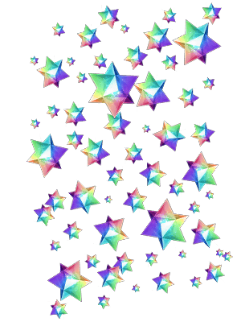 |
2018年7月30日(一) AM3:00～8月6日(一) AM2:59的期間中，初次進行登入的時間點，贈送至禮物箱。
※期間內未登入的話無法領取。
※禮物只能領取1次。
在達文西工房的「魔力稜鏡交換」以期間限定追加下述的概念禮裝及道具。
◆魔力稜鏡交換＆期間限定概念禮裝◆
| 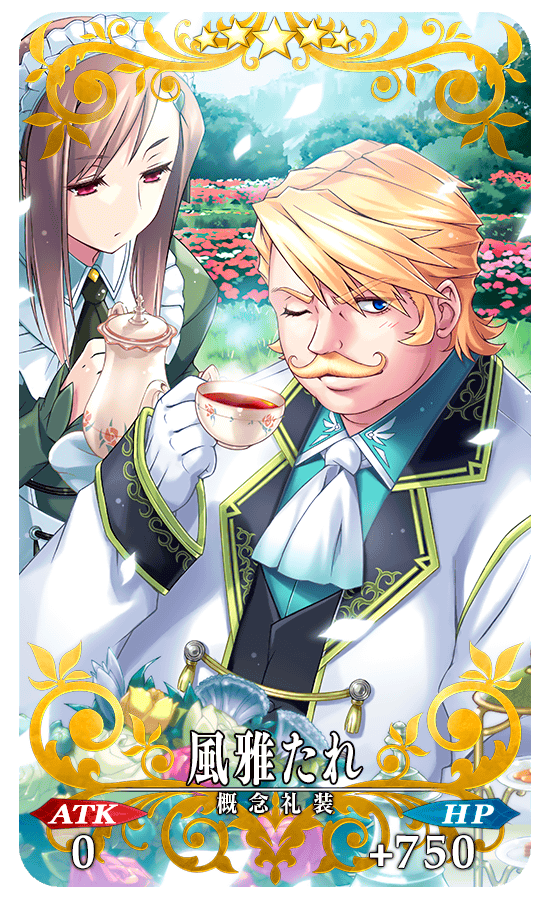 |
★★★★★SSR |
◆概念禮裝交換期間◆
2018年7月29日(日) 15:30～10月31日(三) 22:59
| 追加道具 | 能交換 次數 |
1次交換所需 魔力稜鏡數 |
|---|---|---|
| 【期間限定】★5(SSR)風雅たれ | 5次 | 1000個 |
◆道具交換期間◆
2018年7月29日(日) 15:30～8月12日(日) 11:59
| 追加道具 | 能交換 次數 |
1次交換所需 魔力稜鏡數 |
|---|---|---|
| 【期間限定】呼符 | 10次 | 10個 |
| 【期間限定】叡智的猛火ALL★4(SR)10張組 | 10次 | 20個 |
| 【期間限定】英靈結晶・星之芙芙ALL★3(HP) | 30次 | 5個 |
| 【期間限定】英靈結晶・太陽之芙芙ALL★3(ATK) | 30次 | 5個 |
【7月31日(二) 17:00追記】
在達文西工房的「魔力稜鏡交換」追加下述的期間限定道具。
◆道具交換期間◆
2018年7月31日(二) 17:00～8月14日(二) 11:59
| 追加道具 | 能交換 次數 |
1次交換所需 魔力稜鏡數 |
|---|---|---|
| 【3周年記念】Quick・Code・Opener | 3次 | 10個 |
| 【3周年記念】Arts・Code・Opener | 3次 | 10個 |
| 【3周年記念】Buster・Code・Opener | 3次 | 10個 |
| 【3周年記念】Code・Remover | 3次 | 100個 |
另外，在達文西工房的「魔力稜鏡交換」「稀有稜鏡交換」追加下述的道具。
◆道具交換期間◆
2018年7月31日(二) 17:00～8月31日(五) 22:59
◆「魔力稜鏡交換」追加道具◆
| 追加道具 | 能交換 次數 |
1次交換所需 魔力稜鏡數 |
|---|---|---|
| Quick・Code・Opener | 3次 | 100個 |
| Arts・Code・Opener | 3次 | 100個 |
| Buster・Code・Opener | 3次 | 100個 |
◆道具交換期間◆
2018年7月31日(二) 17:00～8月14日(二) 22:59
◆「稀有稜鏡交換」追加道具◆
| 追加道具 | 能交換 次數 |
1次交換所需 稀有稜鏡數 |
|---|---|---|
| Code・Remover | 3次 | 1個 |
對從現在開始遊戲的玩家，翻新起跑衝刺宣傳活動！
宣傳活動期間從最多7天內大幅延長至最大14天內！
最多14天內登入的話，給予聖晶石召喚52次份的聖晶石與呼符、在Servant的育成有用的叡智的猛火ALL★4(SR)86張！
還有其他許多在遊戲有用的豪華道具！
◆翻新實施時間◆
2018年7月30日(一) AM3:00～
◆領取方法◆
■其1.關卡通過
通過「特異點F 炎上汙染都市 冬木 第3節」後聖晶石2個，另外通過「特異點F 炎上汙染都市 冬木」聖晶石10個！
可得到合計12個(聖晶石召喚4次份)！
■其2.登入獎勵
從遊戲開始，14天內登入的話得到以下的道具！
【登入獎勵合計】
・聖晶石96個(聖晶石召喚32次份)
・呼符20枚(聖晶石召喚20次份)
・友情點數 合計28,000pt(友情點數召喚140次份)
・叡智的猛火 ALL★4(SR) 86枚
・黃金果實 32個
・200萬QP
| 登入天數 | 報酬內容 |
|---|---|
| 第1天 | 聖晶石 1個 友情點數 2,000pt 叡智的猛火 ALL★4(SR) 1張 黃金果實 1個 |
| 第2天 | 聖晶石 2個 友情點數 2,000pt 叡智的猛火 ALL★4(SR) 1張 黃金果實 1個 |
| 第3天 | 聖晶石 3個 友情點數 2,000pt 叡智的猛火 ALL★4(SR) 1張 黃金果實 1個 |
| 第4天 | 聖晶石 5個 友情點數 2,000pt 叡智的猛火 ALL★4(SR) 1張 黃金果實 1個 |
| 第5天 | 聖晶石 7個 友情點數 2,000pt 叡智的猛火 ALL★4(SR) 1張 黃金果實 1個 |
| 第6天 | 聖晶石 10個 友情點數 2,000pt 叡智的猛火 ALL★4(SR) 1張 黃金果實 1個 |
| 第7天 | 聖晶石 20個 友情點數 2,000pt 100萬QP 叡智的猛火 ALL★4(SR) 10張 黃金果實 10個 呼符 10張 |
| 第8天(追加) | 聖晶石 3個 友情點數 2,000pt 叡智的猛火 ALL★4(SR) 10張 黃金果實 1個 |
| 第9天(追加) | 聖晶石 3個 友情點數 2,000pt 叡智的猛火 ALL★4(SR) 10張 黃金果實 1個 |
| 第10天(追加) | 聖晶石 3個 友情點數 2,000pt 叡智的猛火 ALL★4(SR) 10張 黃金果實 1個 |
| 第11天(追加) | 聖晶石 3個 友情點數 2,000pt 叡智的猛火 ALL★4(SR) 10張 黃金果實 1個 |
| 第12天(追加) | 聖晶石 3個 友情點數 2,000pt 叡智的猛火 ALL★4(SR) 10張 黃金果實 1個 |
| 第13天(追加) | 聖晶石 3個 友情點數 2,000pt 叡智的猛火 ALL★4(SR) 10張 黃金果實 1個 |
| 第14天(追加) | 聖晶石 30個 友情點數 2,000pt 100萬QP 叡智的猛火 ALL★4(SR) 10張 黃金果實 10個 呼符 10張 |
為了記念「Fate/Grand Order」3周年，對支持全粉絲表達感謝。
介紹以14年間龐大Material構築的Fate系列魅力濃縮成5分鐘特別影片！
在「Fate/Grand Order」官方網站內的公告中，公開了「The Essentials of “Fate Series” - 人類史最大的英雄譚 - | Fate/Grand Order 配信3周年記念影片」。敬請確認。

連續2天2018年7月28日(六)・29日(日)在幕張Messe 國際展示場舉辦的線下活動「Fate/Grand Order Fes. 2018 ～3rd Anniversary～」的舞台上進行的最大傷害試行的活動將做為遊戲內的關卡2天內間限定配信！
最大傷害試行關卡是記錄「隊伍在1回合中給予的傷害合計」的特殊關卡。
還有，最大傷害試行關卡只限自己的持有Servant編成隊伍(無法使用支援的Servant)。
靠培育的自豪Servant挑戰，挑戰自己最高記錄吧！
※2種最大傷害試行關卡將在迦勒底之門內配信。
※合計傷害為各關卡統計，各「隊伍在1回合中給予的傷害合計」之中，取最高的記錄。
※請注意最大傷害試行關卡沒有達成報酬等。
◆舉辦期間◆
關卡1:2018年7月28日(六) AM8:00(預定)～7月29日(日) 15:59
關卡2:2018年7月29日(日) AM8:00(預定)～7月29日(日) 15:59
◆活動參加條件◆
只限通過「特異點F 炎上汙染都市 冬木」的Master才能參加
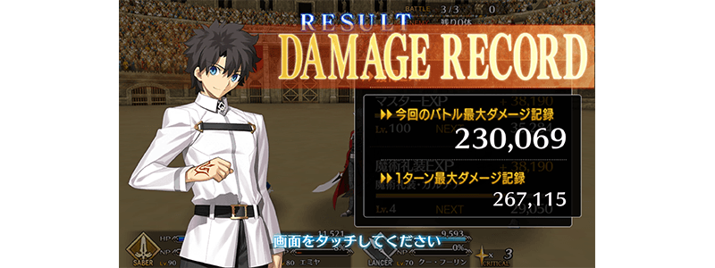
其他還有，期間限定「Fate/Grand Order Fes. 2018 ～3rd Anniversary～特異點Pick Up召喚」舉辦中！
關於詳情請自下述橫幅確認。